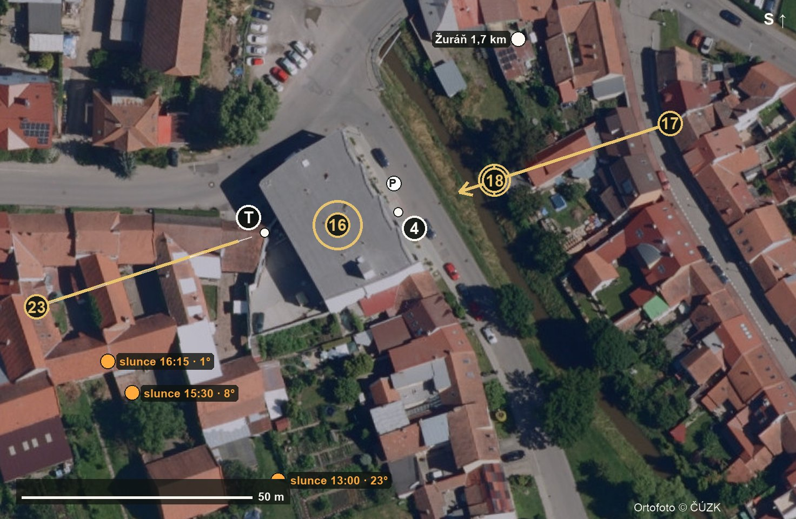

Terasa až na konec. Míří na 252° do dvora, slunce v 15:30 na 236° a 8° nad obzorem, v 16:15 na 245°, zapadá v 16:28. Hook a ulici bereme hned po příjezdu, byt přes den, dron v 15:25, terasu s Danielem a reelem od 15:45. Daniel je potřeba 13:15–14:50 a 15:45–16:25.
Bytový dům Zlatý potok na rohu, plochá šedá střecha, podél Lidické teče potok. Byt č. 12 ve 3. NP, terasa do dvora na západ. Zastavit na Lidické před domem u bodu P.
Bod P · 49.165477, 16.729384
Daniel Helešic, +420 730 815 185, tykáme. Vjezd do garáže si ukaž hned po příjezdu, na mapě není jistý.

A = podle scénáře, B = volněji, C = kratší a úderné. Ťuknutím vybranou variantu zvýrazníš (tablet si ji pamatuje). Každou vybranou natoč aspoň 2×, když je čas, i druhou variantu.
Věty se navazují: hook → (příběh 1805 a přechod jsou bez Daniela) → příchod → byt → pozvánka. V reelu: dveře → Napoleon proběhne → terasa „Výhled dobrý.“ → Danielova odpověď.
Bez vysvětlení divák neví, proč jsou před domem vojáci a v bytě Napoleon. Ve filmu to řekne vypravěč hned po hooku, v reelu titulek (a hlas) v první vteřině. Kdo bude vypravěč, vyber na místě s Danielem.
Pod hlasem hudba se ztlumí o 8 dB. Titulky vždy i v obraze, ať to funguje i bez zvuku na sítích.
Ověřeno v katalogu Higgsfieldu 4. 11.: Kling 3.0 Omni Edit, Kling 3.0 Omni Frames, Kling 3.0 Motion Control, Kling 4.0 (video-edit), Seedance 2.0. Princip: AI jen tam, kde je potřeba, všechno ostatní ze skutečného záběru.